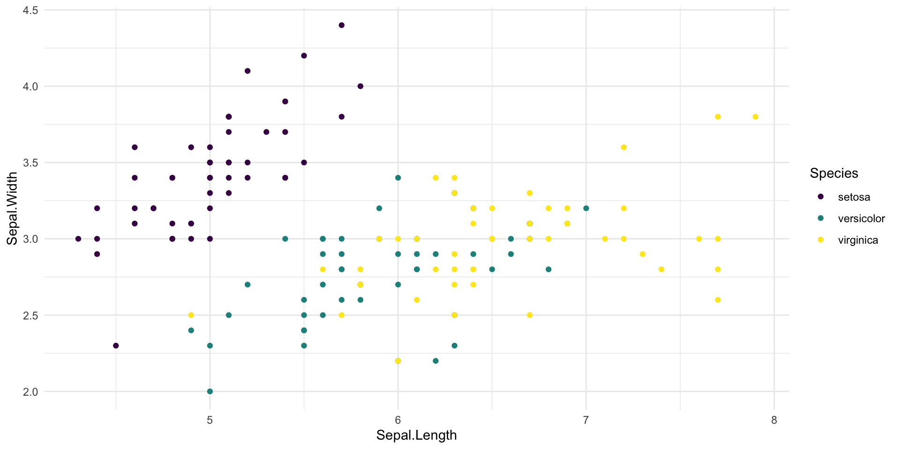
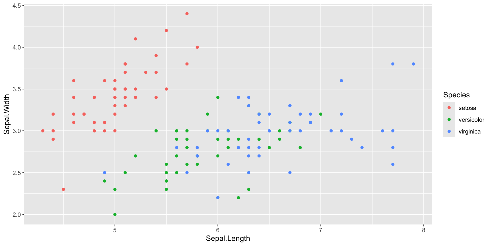
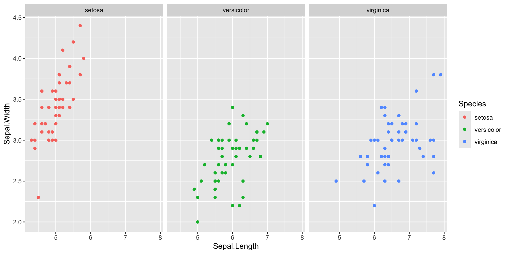
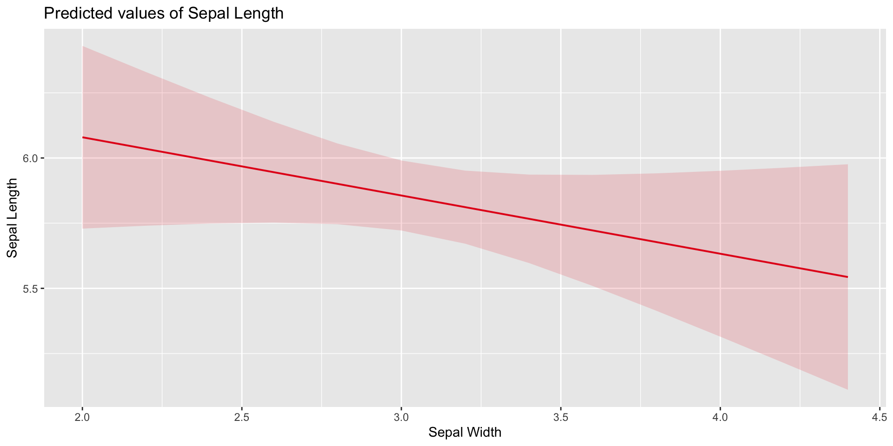
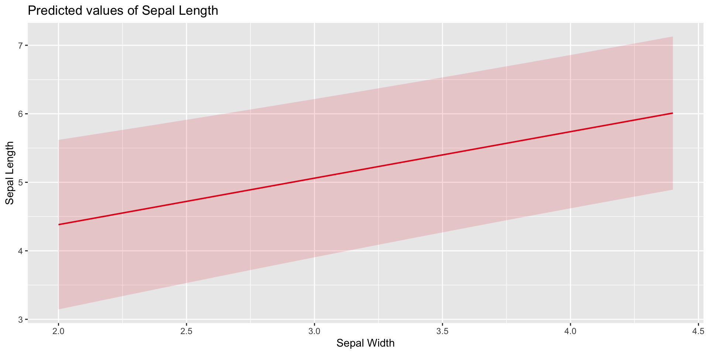
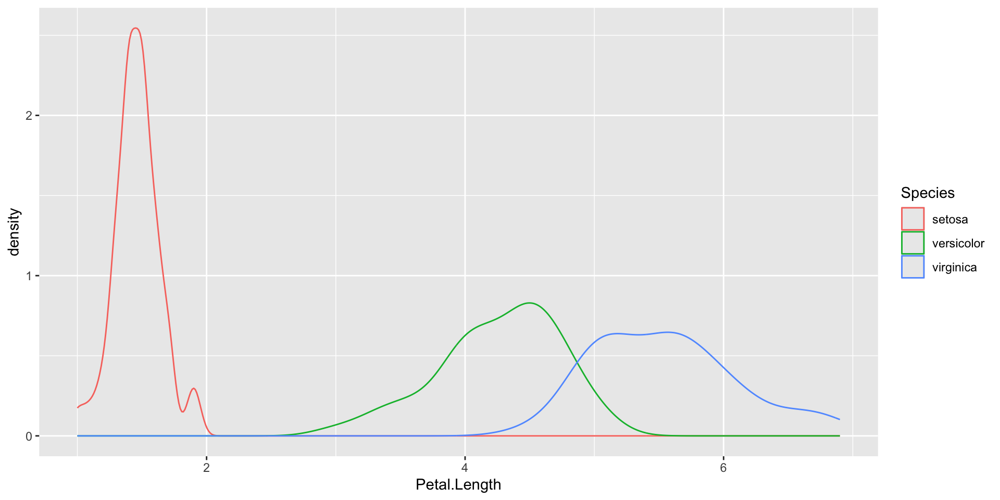
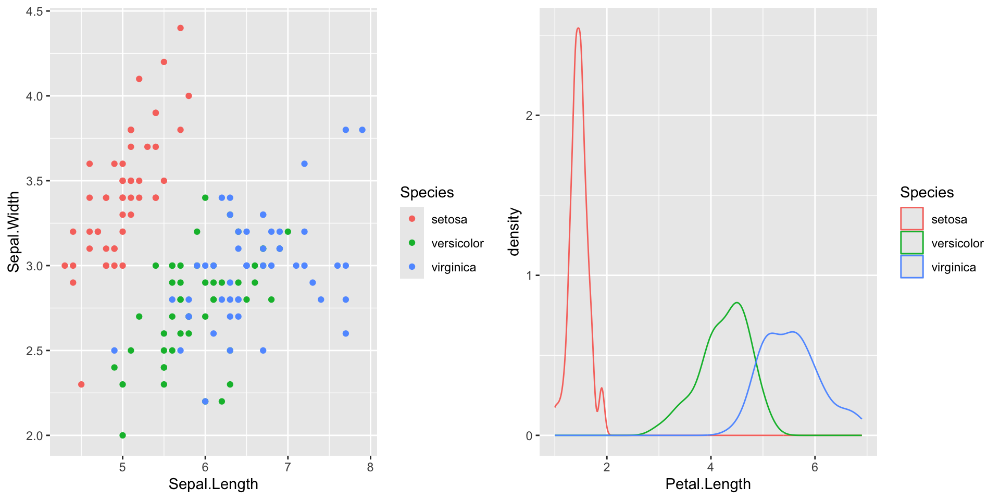
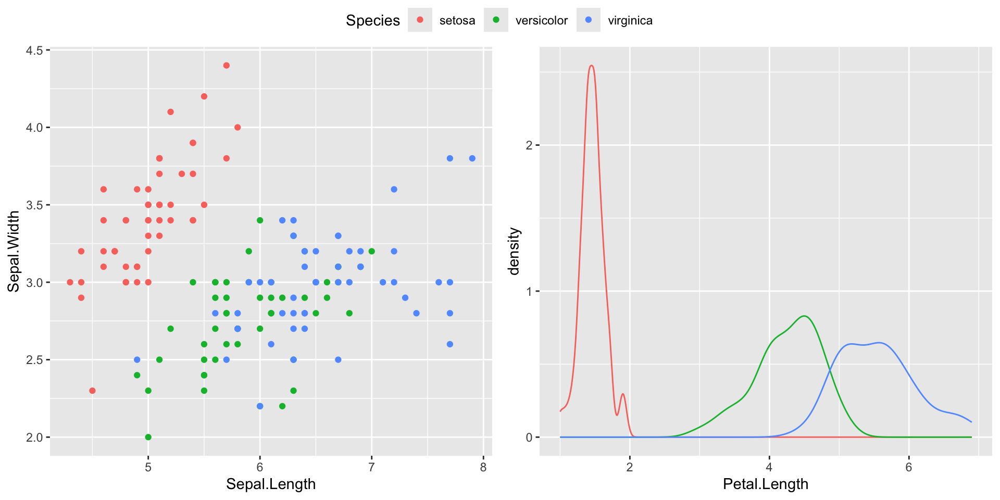

Good practices in Data Visualisation
Focus
- Just like text, figures should enhance ‘the story’
- Less is more
Approaches
A common approach to data analysis and quantitative research is the figures first approach, suggesting that:
- Even before you collect your data, you should have in mind how the data will be presented in your report / paper
- This is also true for the type of analysis you are conducting e.g. the design you choose to test will influence the variables you will analyse, as well as the figures you will produce.
Approaches
Figures should balance:
- Including enough information to provide a clear, honest presentation of the data (or the analysis)
- Not too much information (avoid superfluos information) which could be detrimental to a clearer interpretation of the figure.
Approaches
‘Ethical’ figures
How much information is enough?
‘Ethical’ figures
- The magnitude of a difference: All else being equal, the bigger the difference between two groups, the more you should expect there to be a difference in the population.
- The variability in the data: All else being equal, the less variability there is within the sample, the more cer tain you can be that you have estimated a difference accurately.
- The sample size: All else being equal, bigger samples allow you to measure differences more accurately.
‘Ethical’ figures
It is important that figures address these points. Often misleading figures only focus on the magnitude of a difference, but discount the variability in the data and the sample size.
We will learn ways to address these points.
More specifically:
- Colors, shapes, types should be used to improve the readability of the figure
- Certain colors, shape and types may be detrimental to the interpretability of the figure and should be avoided
Color palettes
The case of viridis
Let’s look at Viridis together:
…
Color palettes
Let’s look at Viridis together:

Color palettes
Let’s look at Viridis together:
A few more tools to enhance your overall experience with ggplot2
facet_wrap
Facet wrap allows you to create separate, equal plots for multiple levels of the same variable. For example:
facet_wrap
facet_wrap
The right plot
- Figures are often a direct representation of the raw data
- However, figures showing outcomes of statistical analyses are just as valuable, the case of
plot_model()from packagesjPlot
The sjPlot plot
plot_model() is an implementation of ggpredict() from package ggeffects and ggplot() from package ggplot2.
plot_model() extracts model estimates from your (mostly linear regression) model and plots them for you. The plots are ggplot2 objects that can
The sjPlot plot
The sjPlot plot
Publication-ready graphs
ggpubr and ggannotate
ggpubr is as package that allows you to tie multiple ggplot2 objects in a coherent way, so that they are publication-ready.
Given two ggplot2 objects plot1 and plot2, you can use ggarrange to create one ggplot2 object that connects both plots.
ggpubr and ggannotate

ggpubr and ggannotate
ggpubr and ggannotate
ggpubr and ggannotate
If the plots are similar enough, you might be able to use a common legend across both plots, like so:
A wealth of options
Out there
In this course, we learned a few ways to create ggplot2 objects. Later today we’ll see a few more.
However, there’s million of different ggplot2 object combinations that can be created.
I can’t teach you all of them!
Out there
Googling is part of the job: There is a wealth of posts, tutorials out there so don’t be afraid to google things. Often times it’s enough to Google: ggplot2 + the type of plot you want to create, or the question that you’re trying to solve.
Chances are someone asked this question before you, already.
What are we working on today?
Topics
geom_ridges()annotate()geom_histogram()geom_smooth()- And more!
massimiliano.canzi@uni-konstanz.de